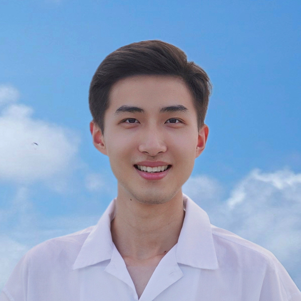
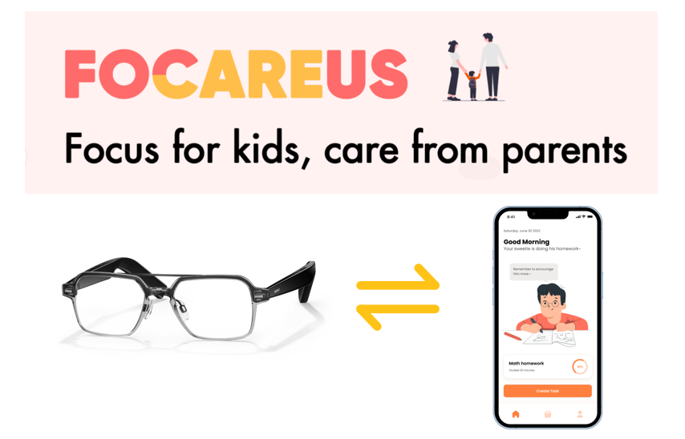
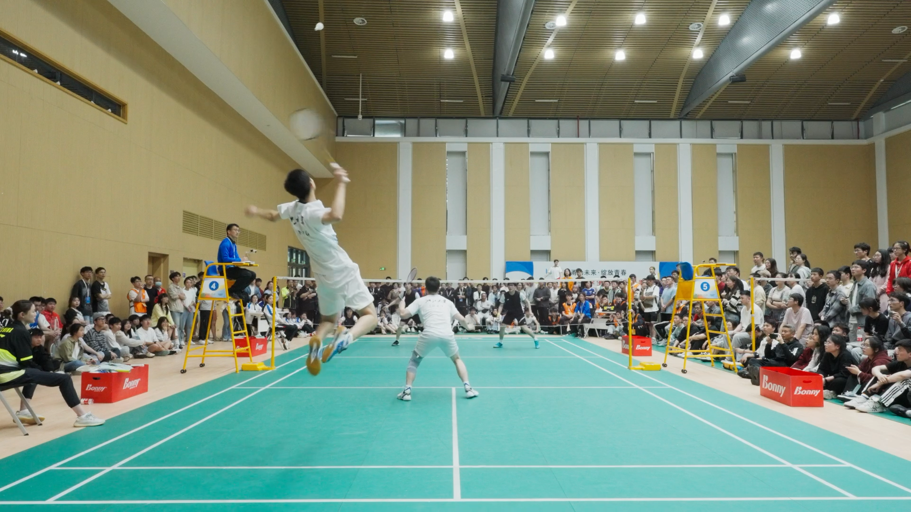

|
 |
Leo / Zeqing Yuan
袁泽清 Turing Class, Zhejiang University Email: leoyuan @ X X = {zju.edu.cn, cs.stanford.edu} Google Scholar • GitHub • Twitter |
About
|
Hi, I am an undergraduate student majoring in Computer Science in
Turing Class,
jointly cultivated by Chu Kochen Honors College
and College of Computer Science and Technology, Zhejiang University.
|
News
- [Dec, 2022] Awarded SenseTime Scholarship
- [Oct, 2022] One work receives People's Choice Award in ACM MobileHCI 2022
- [June, 2021] One paper accepted to VIS 2021 and TVCG
Publication
|
TIVEE: Visual Exploration and Explanation of Badminton Tactics in Immersive Visualizations |

|
|
Experience
|
Lead of National Undergraduate Innovative Research Project
|
|
Research Assistant
|
 |
ACM MobileHCI Student Design Competition
|
NUS Summer Workshop
|

Miscellaneous
|
Besides research, I have a wide variety of interests.
|
 |
|